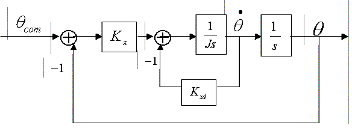

A basic bang-bang control about single axis was implemented in this scenario.
The model of a linearized spacecraft dynamics with a proportional and
derivative
control was considered, which is shown in the illustration below.

Inputs
J Spacecraft Moment
of inertia wn Desired natural
frequency damping Desired damping coefficient Torque Torque level of the bang-bang
actuator Dead Zone Range in which no torque should
be applied theta_com Commanded angular position
Initial Condition
theta Spacecraft angular position
for an actuator with no constraint thetaDot Spacecraft angular velocity
for an actuator with no constraint thetaBang Spacecraft angular position for
the bang-bang actuator thetaDotBang Spacecraft angular velocity for the bang-bang
actuator